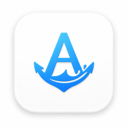

帮助人保持和恢复注意力
总览呈现重点，详情留住上下文，返航帮助人接着做。

Anchor产品协作地图 GitHub从手机上的一次投锚，到电脑上的任务观察，再到离开后的返航。这里是一份可以一起查看、讨论和维护的 Anchor 地图。
一份地图，连接产品与实现。点击任一节点，查看页面入口、交互规则、界面素材和对应源码。
先看工作主线，再展开双端页面与数据流。
← 左右滑动地图查看全部节点，或使用下方路径索引。
地图表示当前实现关系。页面截图使用隔离测试数据；无截图的节点提供结构说明。完整能力与验收范围见下方「设计与版本」。
按设备筛选，或搜索页面、功能和交互关键词。
试试「任务」「返航」或切换设备筛选。
iPhone 负责创建、查看、记录和确认；Mac 负责观察已接入的任务。共享核心将用户操作与来源事件变成一致、可回看的工作状态。
它是一份公开的产品说明，不连接个人工作数据。每个节点可复制独立链接，并跳转到对应代码或预填反馈的 GitHub Issue 页面。只有你在 GitHub 点击提交后，反馈才会发布。
总览呈现重点，详情留住上下文，返航帮助人接着做。
真实进展应容易察觉；重要结果持续可查，无需一直盯着屏幕。
操作有回应，动画解释变化，手机和电脑都保持良好的交互品质。
| 主题 | 当前版本 | 阅读时注意 |
|---|---|---|
| 产品职责 | 手机工作副屏 + Mac 任务观察 | 已移除代决策、外部作答和恢复执行入口。 |
| 数据来源 | Codex 本地会话 + CLI 命令生命周期 | 通用应用 / 浏览器活动与 Safari 扩展已退出范围。 |
| 自动离开 | 全部认证连接连续失联 ≥ 五分钟，再短暂交接 | 此前必须有过有效连接；手动离开立即生效。 |
| 返航顺序 | 认证重连 → 四卡回顾 → 返回 → 横屏提示 | 无需先横屏；旋转和 RSSI 不会单独触发返航。 |
| 多任务与进度 | 独立任务记录、主会话粗线、未知进度虚线 | 本地可读性修订已显示「未知」和具体百分比；颜色代表任务，主会话胶囊不混合平均。 |
| 完成表达 | 对勾徽章 + 用户最终完成确认 | 五角星已退役；来源执行结束不自动完成整体锚点。 |
| 通知与云同步 | 应用内变化记录；可选 CloudKit 事件适配 | 后台通知未提供；生产 CloudKit 仍需配置和验收。 |